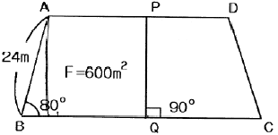
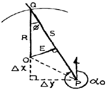
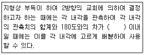
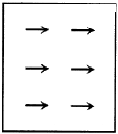
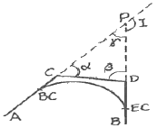
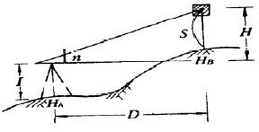
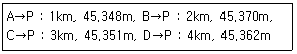
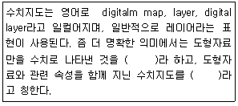
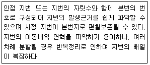

지적기사 (2015-08-16 기출문제)
1과목: 지적측량
1. 면적측정의 방법으로 틀린 것은?
- 경위의측량방법으로 세부측량을 한 지역의 필지별 면적측정은 경계점좌표에 의한다.
- 좌표면적계산법에 의한 산출면적은 1000분의 1m2까지 계산하여 100분의 1m2단위로 정한다.
- 전자면적측정기에 의한 면적측정은 도상에서 2회 측정하여 그 교차가 허용면적 이하일 때에는 그 평균치를 측정면적으로 한다.
- 전자면적측정기에 의한 측정면적은 1000분의 1m2까지 계산하여 10분의 1m2 단위로 정한다.
(정답률: 83%)

2. 오차의 성질에 관한 설명 중 옳지 않은 것은?
- 정오차는 측정횟수를 거듭할수록 누적된다.
- 우연오차에서 같은 크기의 정(+)ㆍ부(-)오차가 발생할 확률은 거의 같다고 가정한다.
- 정오차는 발생 원인과 특성을 파악하면 제거할 수 있다.
- 부정오차는 착오라고도 하며, 관측자의 부주의 또는 관측 잘못으로 발생하는 것이 대부분이다.
(정답률: 65%)
3. 지적소관청은 저적도면의 관리에 필요한 경우에는 지번부여지역마다 일람도와 지번색인표를 작성하여 갖춰둘 수 있다. 이 때 일람도를 작성하지 아니할 수 있는 경우는 도면이 몇 장 미만일 때인가?
- 4장
- 5장
- 6장
- 7장
(정답률: 69%)
4. 다음 그림에서 BQ의 길이는? (단, AD//BC, F=600m2임)

- 23.46m
- 25.78m
- 27.47m
- 29.38m
(정답률: 52%)
5. 경위의측량방법으로 세부측량을 한 지역의 필지별 면적측정 방벙은?
- 전자면적측정기법
- 좌표면적계산법
- 도상삼변법
- 방사법
(정답률: 50%)
6. 경계점좌표등록부를 갖춰 두는 지역의 측량방법 및 기준이 옳지 않은 것은?
- 각 필지의 경계점을 측정할 때에는 도선법ㆍ방사법 또는 교회법에 따라 좌표를 산출하여야 한다.
- 필지의 경계점이 지형ㆍ지물에 가로막혀 경위의를 사용할 수 없는 경우에는 간접적인 방법으로 경계점의 좌표를 산출할 수 있다.
- 기존의 경계점좌표등록부를 갖춰 두는 지역의 경계점에 접속하여 경위의측량방법 등으로 지적확정측량을 하는 경우 동일한 경계점의 측량성과가 서로 다를 때에는 경계점좌표등록부에 등록된 좌표를 그 경계점의 좌표로 본다.
- 각 필지의 경계점 측점번호는 오른쪽 위에서부터 왼쪽으로 경계를 따라 일련번호를 부여한다.
(정답률: 77%)
7. 다음 중 지적도근점측량에 대한 설명으로 옳은 것은?
- 지적도근점측량의 도선은 A도선과 B도선으로 구분한다.
- 광파기측량방법과 도선법에 따른 지적도근점의 수평각 관측 시 경계점좌표등록부 시행지역에 대하여는 배각법에 따른다.
- 다각망도선법으로 지적도근점측량을 할 때에 1도선의 점의 수는 40개 이하로 한다.
- 교회망 또는 교점다각망으로 구성하여야 한다.
(정답률: 45%)
8. 다음 그림에서 수선장(E)은? (단, △x=+124.380m, △y=+19.301m, αO=313°10' 54", 그림은 개략도임)

- 101.3m
- 103.9m
- 124.4m
- 156.4m
(정답률: 49%)
9. 지적기준점 등이 매설된 토지를 분할하는 경우 그 토지가 작아서 제도하기가 곤란한 때에는 그 도면의 여백에 그 축척의 몇 배로 확대하여 제도할 수 있는가?
- 5배
- 10배
- 15배
- 20배
(정답률: 78%)
10. 다음 중 구면삼각법을 평면삼각법으로 간주하여 계산할 때 적용하는 이론은?
- 가우스(Gauss) 정리
- 르장드르(Legender) 정리
- 뫼스니에(Measnier) 정리
- 가우스쿠르거(Gauss-Kruger) 정리
(정답률: 73%)
11. 다음 중 경위의측량방법에 따른 세부측량에서 연직각의 관측은 정반으로 1회 관측하여 그 교차가 얼마 이내일 때에 그 평균치를 연직각으로 하는가?
- 2분 이내
- 3분 이내
- 4분 이내
- 5분 이내
(정답률: 72%)
12. 평판측량방법에 따른 세부측량에서 지상경계선과 도상경계선의 부합 여부를 확인하는 방법으로 옳지 않은 것은?
- 도상원호교회법
- 지상원효교회법
- 헌형법
- 거리비교교회법
(정답률: 71%)
13. 지적삼각보조점의 수평각 관측에 대한 설명으로 옳은 것은?
- 각 관측방법에 따른다.
- 방위각 측정방법에 따른다.
- 방향관측법에 따른다.
- 방위각법과 배각법에 따른다.
(정답률: 52%)
14. 도곽선의 제도에 대한 설명 중 틀린 것은?
- 도면의 위 방향은 항상 북쪽이 되어야 한다.
- 지적도의 도곽 크기는 가로 40cm, 세로 30cm의 직사각형으로 한다.
- 도곽의 구획은 지적 관련 법형에서 정한 좌표의 원점을 기준으로 하여 정한다.
- 도면에 등록하는 도곽선의 수치는 1mm 크기의 아라비아 숫자로 제도한다.
(정답률: 58%)
15. 전파기측량방법에 의하여 교회법으로 지적삼각보조점 측량을 하는 기준에 관한 아래 설명 중 ()에 알맞은 것은?

- ±20초
- ±30초
- ±40초
- ±50초
(정답률: 57%)
16. 축척 1/600지역에서 지적도근점측량을 실시하여 측정한 수평거리의 총합계가 1600m 이었을 때 연결오차의 허용범위는? (단, 1등도선인 경우이다.)
- 21cm 이하
- 24cm 이하
- 27cm 이하
- 30cm 이하
(정답률: 58%)
17. 지적삼각점측량에서 수평각의 측각공차 기준이 옳은 것은?
- 1측회의 폐색 : ±30초 이내
- 1방향각 : 40초 이내
- 삼가형 내각관측의 합과 180도와의 차 : ±40초 이내
- 기지각과의 차 : ±30초 이내
(정답률: 70%)
18. 축척 1/1200 지적도 지역에서 도곽신측량이 △X1=-0.4mm, △X2=-1.0mm, △Y1=-0.8mm, △Y2=-0.6mm일 경우 도곽석의 보정계수는?
- 1.0026
- 1.0032
- 1.0038
- 1.0044
(정답률: 43%)
19. 평판측량방법에 따른 세부측량을 도선법으로 하는 경우의 기준으로 옳지 않은 것은? (단, N은 변의 수를 말한다.)
- 위성기준점, 통합기준점, 삼각점, 지적삼각점, 지적삼각보조점 및 지적도근점, 그 밖에 명확한 기지점 사이를 서로 연결한다.
- 광파조준의 또는 광파측거기를 사용하는 경우를 제외하고 도선의 측선장은 도상길이 8cm 이하로 한다.
- 도선의 변은 20개 이하로 한다.
- 도선의 폐색오차는 √N mm 이하로 한다.
(정답률: 61%)
20. 일람도의 제도에 대한 설명 중 틀린 것은?
- 고속도로는 검은색 0.4mm의 2선으로 제도한다.
- 철도용지는 붉은색 0.2mm의 2선으로 제도한다.
- 수도선로는 남색 0.1mm의 2선으로 제도한다.
- 도면번호는 3mm의 크기로 한다.
(정답률: 63%)
2과목: 응용측량
21. 노선측량에서 곡선설치에 사용하는 완화곡선에 해당되지 않는 것은?
- 복심곡선
- 3차포물선
- 클로소이드곡선
- 램니스케이트곡선
(정답률: 60%)
22. 축척 1:10000의 항공사진에서 건물의 시차를 측정하니 상부가 19.33mm, 하부가 16.83mm이었다면 건물의 높이는? (단, 촬영고도=800m, 사진 상의 기선길이=68mm)
- 19.4m
- 29.4m
- 39.4m
- 49.4m
(정답률: 45%)
23. 수준기의 감도가 20“ 인 레벨(Level)을 사용하여 40m 떨어진 표척을 시준할 때 발생할 수 있는 시준 오차는?
- ±0.5mm
- ±3.9mm
- ±5.2mm
- ±8.5mm
(정답률: 51%)
24. 상호표정에서 그림과 같은 시차를 소거하기 위한 표정인자는?

- bx
- by
- bz
- K1
(정답률: 53%)
25. 두 개의 수직터널에 의하여 깊이 700m의 터널 내외를 연결을 하는 경우에 지상에서의 수직터널 간 거리가 500m라면 두 수직터널 간 터널 내외에서의 거리 차이는? (단, 지구반지름 R=6370km이다.)
- 4.5m
- 5.5m
- 4.5cm
- 5.5cm
(정답률: 38%)
26. 단일 주파수 수신기와 비교할 때, 이중 주파수 수신기의 특징에 대한 설명으로 옳은 것은?
- 전리층지연에 의한 오차를 제거할 수 있다.
- 단일 주파수 수신기보다 일반적으로 가격이 저렴하다.
- 이중 주파수 수신기는 C/A 코드를 사용하고 단일 주파수 수신기는 P코드를 사용한다.
- 단거리 측량에 비하여 장거리 기성측량에서는 큰 이점이 없다.
(정답률: 58%)
27. 등고선의 설질을 설명한 것으로 틀린 것은?
- 등고선은 등경사지에서 등간격으로 나타낸다.
- 등고선은 도면 내ㆍ외에서 반드시 폐합하는 폐곡선이다.
- 등고선은 절벽이나 동굴을 제외하고는 교차하지 않는다.
- 등고선은 급경사지에서는 간격이 넓고 완경사지에서는 좁다.
(정답률: 70%)
28. 곡선의 종류 중 원곡선 두 개가 접속점에서 각각 다른 방향으로 굽어진 형태의 곡선으로 주로 계곡부에 이용되는 것은?
- 단곡선
- 복심곡선
- 완화곡선
- 반향곡선
(정답률: 44%)
29. 그림의 AC와 DB간 원곡선을 설치하려고 할 때, 교점을 장애물로 인해 관측할 수 없어 ∠ACD=140°, ∠CDB=100°, CD=180m를 관측했다. 이 때 C점에서 BC점까지의 거리는? (단, 곡선반지름=300m)

- 307.5m
- 314.9m
- 321.6m
- 329.6m
(정답률: 54%)
30. 지상고도 3000m의 비행기에서 초점거리 15cm의 사진기로 촬영한 수직 공중사진에 나타난 50m교량의 크기는?
- 2.0mm
- 2.5mm
- 3.0mm
- 3.5mm
(정답률: 50%)
31. 인공위성을 이용한 원격탐사에 대한 설명으로 옳지 않은 것은?
- 얻어진 영상은 정사투영상에 가깝다.
- 탐사된 자료가 즉시 이용될 수 있다.
- 반복측정이 불가능하고 좁은 지역에 적합하다.
- 회전주기가 일정하므로 원하는 지점 및 시기에 촬영하기 어렵다.
(정답률: 62%)
32. 경사면 위에 두 점(A, B)에서 A점의 표고는 180m, B점의 표고는 60m이고, AB의 수평거리는 200m이다. B로부터 표고 150m인 등고선까지의 수평거리는?
- 50m
- 100m
- 150m
- 200m
(정답률: 59%)
33. 터널측량에서 지표 중심선 측량방법과 직접적으로 관련이 없는 것은?
- 토털스테이션에 의한 직접측량법
- 트래버스 측량에 의한 측설법
- 삼각측량에 의한 측설법
- 레벨에 의한 측설법
(정답률: 32%)
34. 평판을 이용하여 측량한 결과가 그림과 같이 n=13, D=75m, S=1.25m, I=1.30m, HA=50.00m일 때 B점의 표고(HB)는?

- 58.8m
- 59.8m
- 60.8m
- 61.8m
(정답률: 43%)
35. DGPS(Differential GPS)를 이용한 측위에 대한 설명으로 옳지 않은 것은?
- 기본 GPS에 비해 정밀도가 떨어져 배나 비행기의 항법, 자동차 등에 응용되기 어려운 한계가 있다.
- 제2의 장치가 수신기 근처에 존재하여 지금 현재 수신 받는 자료가 얼마만큼 빗나간 양이라는 것을 수신기에게 알려줌으로ㅆ 위치결정의 오차를 극소화 시킬 수 있는데, 바로 이 방법이 DFPS라고 불리는 기술이다.
- DFPS는 두 개의 GPS 수신기를 필요로 하는데, 하나의 수신기에는 정지해 있고(stationary) 다른 하나는 이동을(roving) 하면서 위치측정을 시행한다.
- 정지한 수신기가 DGPS 개념의 핵심이 되는 것으로 정지 수신기는 실제 위성을 이용한 측정값과 이미 정밀하게 결정된 실제 값과의 차이를 계산한다.
(정답률: 55%)
36. 항공사진의 특수 3점 중 기본변위의 중심점이 되는 것은?
- 연직점
- 주점
- 등각점
- 표정점
(정답률: 50%)
37. 반지름(R)-200m, 교각(I)=42°36'인 원곡선에서 현길이(弦長) 20m에 대한 편각(δ)은?
- 1°25‘ 58“
- 2°51‘ 53“
- 5°43‘ 55“
- 5°44‘ 21“
(정답률: 58%)
38. 지하시설물측량 방법 중 수도관의 누수를 찾기 위한 방법으로 비금속(PVC 등) 수도관을 탐사하는데 유용한 것은?
- 음파탐사기법
- 전기탐사기법
- 자장탐사기법
- 지중레이더 탐사기법
(정답률: 71%)
39. P점의 높이를 직접수준측량에 의하여 A, B, C, D의 수준점에서 관측한 결과 각 노선별 거리와 표고값이 다음과 같을 때, P점의 최확값은?

- 45.366m
- 45.376m
- 45.355m
- 45.375m
(정답률: 55%)
40. 삼각형의 세 꼭지점의 좌표가 A(3, 4), B(6, 7), C(7, 1)일 때에 삼각형의 면적은? (단, 좌표의 단위는 m이다.)
- 12.5m2
- 11.5m2
- 10.5m2
- 9.5m2
(정답률: 57%)
3과목: 토지정보체계론
41. 토지정보체계에서 사용하는 기준좌표계의 장점으로 틀린 것은?
- 공간데이터 수집을 분산적으로 할 수 있다.
- 각 부서의 독립적인 추진으로 활용되는 특징을 갖는다.
- 공간데이터 입력을 분산적으로 할 수 있다.
- 도면상의 면적에 대한 정량적 기준이 같게 된다.
(정답률: 63%)
42. 다음 중 복잡하기는 하지만 동질성을 가지고 구성되어 있는 현실세계의 객체들을 보다 정확히 묘사함으로써 기존의 데이터베이스 모형이 가지는 문제점들의 극복이 가능하며 클래스의 주요한 특성으로 계승 또는 상속성의 구조를 갖는 것은?
- 계급형 데이터베이스
- 객체지향형 데이터베이스
- 네트워크형 데이터베이스
- 관계형 데이터베이스
(정답률: 42%)
43. 다음 중 공간정보의 편집에서 분리되어 있는 객체를 하나로 합치는 작업은?
- 트림(trim)
- 복제
- 익스텐드(extend)
- 병합
(정답률: 80%)
44. 다음 중 지적도면을 전산화함에 있어 정비하여야 할 사항과 거리가 먼 것은?
- 도면번호 정비
- 도곽선 정비
- 소유자 정비
- 경계 정비
(정답률: 74%)
45. 다음 문장에서 ()안에 들어갈 용어가 순서대로 바르게 배열된 것은?

- 레이어, 커버리지
- 레전드, 레이어
- 레전드, 커버리지
- 커버리지, 레이어
(정답률: 64%)
46. 다음 중 OGC(Open GIS consortiun)에 관한 설명으로 옳지 않은 것은?
- OGIS(Open Geodata Interoperability Specification)를 개발하고 추진하는데 필요한 합의된 절차를 정립할 목적으로 설립되었다.
- 지리정보를 활용하고 관련 응용분야를 주요 업무로 하는 공공기관 및 민간기관들로 구성된 컨소시움이다.
- ISO/TC211의 활동이 시작되기 이전에 미국의 표준화 기구를 중심으로 추진된 지리정보 표준화 기구이다.
- 지리정보와 관련된 여러 처리방식에 대하여 개방형 시스템적인 접근을 시도하였다.
(정답률: 68%)
47. 현재 사용 중인 토지대장 데이터베이스 관리시스템은?
- RDBMS(Relational DBMS)
- Access Database
- C-ISAM
- Infor Database
(정답률: 66%)
48. 기존 종이지적도면을 스캐닝 방식으로 입력할 경우, 격자영상에 생긴 잡음(noise)을 제거하는 단계는?
- 위상정립 단계
- 세션화(thinning) 단계
- 필터링 단계
- 스캐닝 단계
(정답률: 75%)
49. 오버슈트, 슬리버는 다음 중 어떤 자료를 편집하는 중에 발생하는 오류인가?
- 항공사진의 영상처리
- 위성영상으로부터 정사영상제작
- 벡터데이터 입력 및 편집
- 래스터데이터의 편집
(정답률: 68%)
50. 다음 중 지형 및 공간과 관련된 모든 종류의 공간 자료들을 서로 호환이 가능하도록 하기 ㅜ이하여 만들어진 대표적인 교환표준은?
- SPPS
- SDTS
- GISD
- NIST
(정답률: 75%)
51. 토지정보시스템의 구성요소에 해당되지 않는 것은?
- 인력 및 조직
- 데이터베이스
- 소프트웨어
- 정보이용자
(정답률: 80%)
52. 다음 중 레이어의 중첩에 대한 설명으로 옳지 않은 것은?
- 일정한 정보만을 처리하기 때문에 정보가 단순하다.
- 레이어별로 필요한 정보를 추출해 낼 수 있다.
- 새로운 가설이나 이론 및 시뮬레이션을 통해 정보를 추출하는 모델링 작업을 수행할 수 있다.
- 형상들의 공간관계를 파악할 수 있으며 특정지점의 주변 환경에 대한 정보를 얻는 경우에도 사용할 수 있다.
(정답률: 66%)
53. 다음 중 테이블을 삭제하는 SQL 명령어로 옳은 것은?
- DROP TABLE
- DELETE TABLE
- ALTER TABLE
- ERASE TABLE
(정답률: 58%)
54. 데이터베이스 관리시스템의 필수 기능에 포함되지 않는 것은?
- 정의
- 설계
- 조작
- 제어
(정답률: 73%)
55. 항공사진을 활용한 토지정보 수집에 대한 설명으로 옳지 않은 것은?
- 항공사진은 사진 판독을 통하여 지질도, 토지이용도 등의 각종 주제도 제작 시 자료로 이용한다.
- 항공사진을 스캐닝하여 공간데이터에 대한 보조적 자료로 활용한다.
- 해석 도화기의 결과 데이터는 GIS 공간 데이터로 쉽게 활용된다.
- 항공사진은 세부적인 정보를 얻을 수 있는 소축척의 정보 획득에 적합하다.
(정답률: 74%)
56. 다음 중 특정 공간데이터를 중심으로 일정한 거리 또는 영역을 설정하여 분석하는 공간분석방법은?
- 버퍼분석
- 네트워크분석
- 중첩분석
- TIN분석
(정답률: 69%)
57. 우리나라 지적도에서 사용하는 평면직각좌표계의 경우 중앙경선에서의 축척계수는?
- 0.9996
- 0.9999
- 1.0000
- 1.5000
(정답률: 60%)
58. 다음 중 메타데이터(Metadata)에 대한 설명으로 가장 거리가 먼 것은?
- 취득하려는 자료가 사용목적에 적합한 품질의 데이터인지를 확인할 수 있는 정보가 제공되어야 한다.
- 데이터의 원활한 교환을 지원하기 위한 틀을 제공함으로써 데이터의 공유를 극대화 할 수 있다.
- 자료에 대한 내용, 품질, 사용조건 등을 기술한다.
- 정확한 정보를 유지하기 위한 수정 및 갱신은 불가능하다.
(정답률: 73%)
59. 토지정보의 공간자료 형태 중 래스터데이터에 비하여 벡터데이터가 갖는 장점과 거리가 먼 것은?
- 그래픽과 관련된 속성정보의 추출 및 일반화, 갱신 등이 용이하다.
- 복잡한 현실세계의 묘사가 가능하다.
- 자료구조가 단순하다.
- 그래픽의 정확도가 높다.
(정답률: 74%)
60. 지적도형정보 수집을 위한 측량이 아닌 것은?
- 측지측량
- 항공사진측량
- GPS측량
- 수치지적측량
(정답률: 38%)
4과목: 지적학
61. 토지조사사업 당시 토지의 사정에 대하여 불복이 있는 경우 이의 재결기관은?
- 임시토지조사국장
- 지방토지조사위원회
- 도지사
- 고등토지조사위원회
(정답률: 71%)
62. 일필지에 하나의 지번을 붙이는 이유로서 적합하지 않은 것은?
- 토지의 개별화
- 토지의 독립화
- 물권객체 표시
- 제한물권 설정
(정답률: 61%)
63. 우리나라 지적관계법형이 제정된 연대순으로 옳은 것은?
- 토지조사령→지세령→조선임야조사령→지적법
- 토지조사령→조선임야조사령→지세령→지적법
- 지세령→토지조사령→조선임야조사령→지적법
- 조선임야조사령→토지조사령→지세령→지적법
(정답률: 80%)
64. 다음 중 근세 유럽 지적제도의 효시로서, 근대적 지적 제도가 가장 빨리 도입된 나라는?
- 네덜란드
- 독일
- 스위스
- 프랑스
(정답률: 82%)
65. 다음 중 수치지적이 갖는 특징이 아닌 것은?
- 도해지적보다 정밀하게 경계를 등록할 수 있다.
- 도면제작과정이 복잡하고 고가의 정밀 장비가 필요하며 초기에 투자경비가 많이 소요된다.
- 정도를 높이고 전산조직에 의한 자료처리 및 관리가 가능하다.
- 기하학적으로 폐합된 다각형의 형태로 표시하여 등록한다.
(정답률: 56%)
66. 구한국 정부에서 문란한 토지제도를 바로잡기 위하여 시행하였던 근대적 공시제도의 과도기적 제도는?
- 입안제도
- 양안제도
- 지권제도
- 등기제도
(정답률: 49%)
67. 지적의 일반적 기능과 거리가 먼 것은?
- 시회적 기능
- 정치적 기능
- 행정적 기능
- 법률적 기능
(정답률: 68%)
68. 우리나라에서 ‘지적’ 이라는 용어를 처음으로 사용한 것은?
- 내부관제(1895.3.26)
- 탁지부관제(1897.5.19)
- 양지아문직원급처무규정(1898.7.6)
- 지계아문직원급처무규정(1901.10.20)
(정답률: 77%)
69. 아래에 설명에 해당하는 지번부여제도는?

- 분수식(分數式) 지번부여제도
- 자유식 지번부여제도
- 기번식(岐番式) 지번부여제도
- 블록식 지번부여제도
(정답률: 54%)
70. 다음 중 광무양전(光武量田)에 대한 설명으로 옳지 않은 것은?
- 등급별 결부산출(結負産出) 등의 개선은 있었으나 면적은 척수(尺數)로 표시하지 않았다.
- 양무위원을 두는 외에 조사위원을 두었다.
- 정확한 측량을 위하여 외국인 기사를 고용하였다.
- 양안의 기재는 전답(田畓)의 도형(圖形)을 기입하게 하였다.
(정답률: 52%)
71. 다음 중 지적제도의 특성으로 가장 거리가 먼 것은?
- 지역성
- 안전성
- 정확성
- 저렴성
(정답률: 37%)
72. 지주총대의 사무에 해당되지 않는 것은?
- 동리의 경계 및 일필지조사의 안내
- 신고서류 취급 처리
- 소유자 및 경계 사정
- 경계표에 기재된 성명 및 지목 등의 조사
(정답률: 49%)
73. 지목 중 전과 답의 결정은 무엇을 기준으로 하는가?
- 주변 지형
- 경작방법
- 작물의 이용가치
- 경작위치, 방향
(정답률: 72%)
74. 토지조사사업에서 지목은 모두 몇 종류로 구분하였는가?
- 15종
- 18종
- 21종
- 24종
(정답률: 76%)
75. 모든 포지를 지적공부에 등록하고 등록된 토지표시사항을 항상 실제와 일치하도록 유지하는 지적제도의 원칙은?
- 적극적 등록주의
- 형식적 등록주의
- 당사자 등록주의
- 소극적 등록주의
(정답률: 65%)
76. 고려시대에 양전을 담당한 중앙기구로서의 특별관서가 아닌 것은?
- 급전도감
- 정치도감
- 절급도감
- 사출도감
(정답률: 64%)
77. 우리나라의 양지아문(量地衙門)이 설치된 시기는?
- 1717년
- 1898년
- 19⑤년
- 1910년
(정답률: 49%)
78. 지표면의 형태, 지형의 고저, 수륙의 분포상태 등 땅이 생긴 모양에 따라 결정하는 지목은?
- 토성지목
- 지형지목
- 용도지목
- 복식지목
(정답률: 75%)
79. 토지조사사업 당시 토지의 사정된 경계선과 임야조사사업 당시 임야의 사정선을 표현한 명칭이 모두 옳은 것은?
- 토지조사사업-경계, 임야조사사업-경계
- 토지조사사업-강계, 임야조사사업-경계
- 토지조사사업-경계, 임야조사사업-지계
- 토지조사사업-강계, 임야조사사업-강계
(정답률: 70%)
80. 다음 중 토지조사사업의 조사내용에 해당되지 않는 것은?
- 지가의 조사
- 토지소유권의 조사
- 지압조사
- 지형ㆍ지모의 조사
(정답률: 66%)
5과목: 지적관계법규
81. 다음 중 지목이 ‘잡종지’에 해당하지 않는 것은?
- 비행장
- 죽림지
- 갈대밭
- 야외시장
(정답률: 53%)
82. 국토의 계획 및 이용에 관한 법령상 개발행위허가를 받아야 할 사항은?
- 사도법에 의한 사도개설 허가를 받아 분할하는 경우
- 토지의 일부가 도시ㆍ군계획시설로 지적고시된 경우
- 토지의 일부를 공공용지 또는 공용지로 하고자 하는 경우
- 토지의 형질변경을 목적으로 하지 않는 흙ㆍ모래ㆍ자갈ㆍ바위 등의 토석을 채취하는 행위
(정답률: 46%)
83. 토지소유자가 해야 할 신청을 대신할 수 없는 자는?
- 토지점유자
- 채권을 보전하기 위한 채권자
- 학교용지, 도로, 수도용지 등의 지목으로 될 토지는 그 해당사업의 시행자
- 지방자치단체가 취득하는 토지의 경우에는 해당 토지를 관리하는 지방자치단체의 장
(정답률: 59%)
84. 경계점좌표등록부의 등록사항이 아닌 것은?
- 좌표
- 부호 및 부호도
- 토지소유자 등록번호
- 토지의 소재와 지번
(정답률: 46%)
85. 공간정보의 구축 및 관리 등에 관한 법률에 따른 용어의 정의가 틀린 것은?
- “지번”이란 필지에 부여하여 지적공부에 등록한 번호를 말한다.
- “등록전환”이란 지적도에 등록된 경계점의 정밀도를 높이는 것을 말한다.
- “토지의 이동”이란 토지의 표시를 새로 정하거나 변경 또는 말소하는 것을 말한다.
- “지목변경”이란 지적공부에 등록된 지목을 다른 지목으로 바꾸어 등록하는 것을 말한다.
(정답률: 75%)
86. 다음 중 등기명의인의 될 수 없는 것은?
- 서초구
- OO주식회사
- 권리능력 없는 사단 OO종중 △△공파
- 재단법인 OO학원에서 운영하는 △△고등학교
(정답률: 59%)
87. 지적측량업의 등록취소 및 영업정지에 관한 설명으로 옳지 않은 것은?
- 거짓 그 밖의 부정한 방법으로 지적측량업을 등록한 경우 등록을 취소하여야 한다.
- 타인에게 자기의 등록증으을 대여해 준 경우 등록취소사유가 된다.
- 영업정지기간 중에 지적측량업을 영위한 경우 등록취소가 아닌 재차의 영업정지 명령이 내려질 수 있다.
- 지적측량업자가 법 규정에 의한 지적측량수수료보다 과소하게 받은 경우도 등록 취소 또는 영업정지처분의 대상이 된다.
(정답률: 56%)
88. 공간정보의 구축 및 관리 등에 관한 법률에 다른 지목의 종류가 아닌 것은?
- 양어장
- 절도용지
- 수도선로
- 창고용지
(정답률: 60%)
89. 지상경계의 결정기준으로 틀린 것은?
- 연접되는 토지 간에 높낮이 차이가 없는 경우 그 구조물 등의 중앙
- 연접되는 토지 간에 높낮이 차이가 있는 경우 그 구조물 등의 하단부
- 토지가 해면 또는 수면에 접하는 경우 최대 만조위 또는 최대만수위가 되는 선
- 공유수면매립지의 토지 중 제방 등을 토지에 편입하여 등록하는 경우 안쪽 어깨부분
(정답률: 60%)
90. 토지등의 출입 등에 따른 손실보상에 관하여 손실을 보상할 자와 손실을 받을 자의 협의가 성립되지 않거나 협의를 할 수 없는 경우 재결을 신청할 수 있는 곳은?
- 지적소관청
- 중앙지적위원회
- 지방지적위원회
- 관할토지수용위원호
(정답률: 59%)
91. 다음 중 지적공부의 복구 사유에 해당하는 것은?
- 축척을 변경을 한 때
- 지목변경을 한 때
- 도시계획사업을 완료한 때
- 지적공부의 일부가 훼손한 때
(정답률: 71%)
92. 다음 중 등기의무자가 아닌 등기권리자만이 단독으로 등기신청을 할 수 있는 것은?
- 전세등기
- 상속에 의한 등기
- 등기명의인의 표시의 변경 등기
- 미등기부동산의 소유권보존등기
(정답률: 45%)
93. 토지의 기번이 결번되는 사유에 해당되지 않는 것은?
- 토지의 분할
- 지번의 변경
- 행정구역의 변경
- 도시개발사업의 시행
(정답률: 43%)
94. 토지이동을 수반하지 않고 토지대장을 정리하는 경우는?
- 소유권변경정리
- 토지분할정리
- 토지합병정리
- 등록전환정리
(정답률: 55%)
95. 다음 중 바다로 도니 토지의 등록말소 및 회복에 관한 설명으로 옳지 않은 것은?
- 토지소유자는 지적공부의 등록말소 신청을 하도록 통지를 받은 날부터 90일 이내에 등록말소신청을 하여야 한다.
- 토지소유자가 기간 내에 등록말소신청을 하지 않은 경우 공유수면 관리청이 신청을 대신할 수 있다.
- 지적소관청은 지적공부의 등록사항을 말소하거나 회복등록하였을 때에는 그 정리 결과를 토지소유자 및 해당 공유수면의 관리청에 통지하여야 한다.
- 지적소관청이 회복등록을 하려면 그 지적측량성과 및 등록말소 당시의 지적공부 등 관계 자료에 따라야 한다.
(정답률: 51%)
96. 축척변경위원회의 구성인원으로 옳은 것은?
- 5명 이상 10명 이하
- 10명 이상 15명 이하
- 15명 이상 20명 이하
- 축척변경시행지역안의 토지소유자의 5분의 1
(정답률: 72%)
97. 지적공부에 등록된 토지의 소유자가 단독에서 2인 이상으로 변경될 경우 소유자에 관한 사항을 정리해야 할 지적공부는?
- 지적도와 임야도
- 지적도와 토지대장
- 임야도와 임야대장
- 토지대장과 공유지연명부
(정답률: 71%)
98. 국토의 계획 및 이용에 관한 법령에 따른 용도지역의 구분 및 세분을 지정한 것으로 옳지 않은 것은?
- 도시지역 : 주거지역, 상업지역, 공업지역, 녹지지역
- 공업지역 : 전용공업지역, 일반공업지역, 준공업지역
- 관리지역 : 보전관리지역, 생산관리지역, 자연환경보전지역
- 녹지지역 : 보전녹지지역, 생산녹지지역, 자연녹지지역
(정답률: 54%)
99. 지적측량을 수행하여야 할 경우에 해당되지 않는 것은?
- 토지를 신규등록하는 경우
- 축척변경을 하고자 하는 경우
- 경계점을 지상에 복원하는 경우
- 필지를 분할하거나 합병하고자 할 경우
(정답률: 44%)
100. 등기관이 등기를 한 후 지체 없이 그 사실을 지적소관청 또는 건축물대장 소관청에 톨지하여야 하는 것이 아닌 것은?
- 소유권의 보존등기
- 부동산 표시의 변경등기
- 소유권의 말소회복등기
- 소유권의 등기명의인 표시의 변경등기
(정답률: 41%)